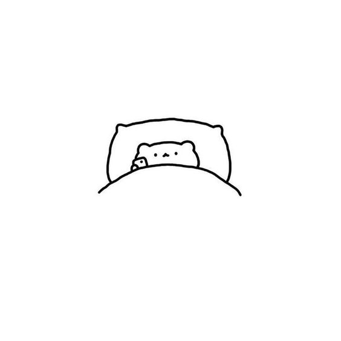

This is my paragraph for my first font.
This is my paragraph for my second font.
Use of the command to change the background color! I like pink.
this text has a dotted border
 I am writing jibberish so that I can see what the image looks like next to text! It is spring quarter. This is INFO 101. I am sleepy. I want to take a nap. This picture is of a cat tucked into a bed with a phone. He looks cozy. He is probably about to take a nap. I think I did everything that I wanted to do for this assignment. I wish that I was this lil cat about to have a good slumber, but alas, I am not. I want this text to fill up this little section of the page. I hope that this does it. It did not. I am continuing to write. Today is April 1st, 2022. It is the end of the first week of classes. I am going to upload this file to Github. I also used an external style sheet to make the background of this page pink.